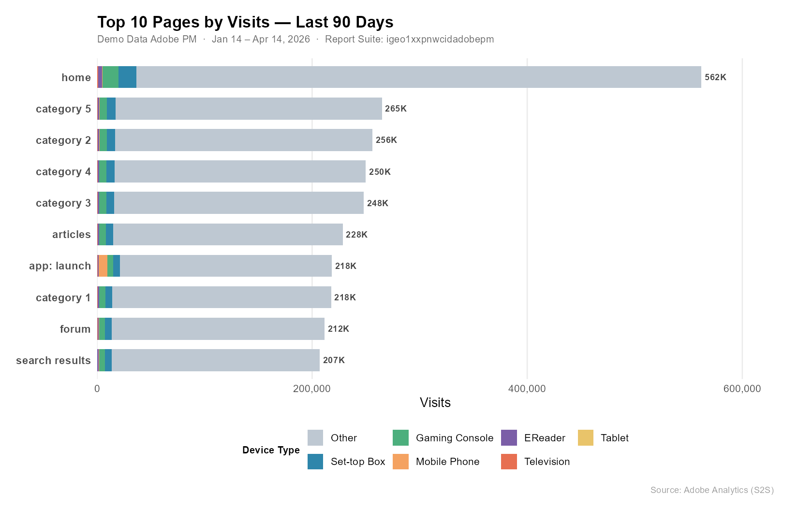

suppressPackageStartupMessages({
library(adobeanalyticsr)
library(jsonlite)
library(dplyr)
library(tidyr)
library(scales)
library(knitr)
library(ggplot2)
})
aw_auth_with("s2s")
aw_auth()
COMPANY_ID <- Sys.getenv("AW_COMPANY_ID")
RSID <- "igeo1xxpnwcidadobepm"
DATE_END <- Sys.Date()
DATE_START <- DATE_END - 90
DATE_RANGE <- as.Date(c(DATE_START, DATE_END))Adobe Analytics + Claude MCP: Natural Language to Live Data
A walkthrough of driving Adobe Analytics queries with natural language using Claude’s Model Context Protocol — from report suite discovery to device breakdowns, ggplot visualizations, and a calculated metric built by reverse-engineering the API.
What is MCP?
Model Context Protocol (MCP) is an open standard that lets AI assistants like Claude connect directly to external tools and data sources. Instead of copying data into a chat window, MCP gives the AI a live connection to APIs — so you can ask questions in plain English and get real answers back from your actual systems.
The foundation of this setup is the adobeanalyticsr R package — a full-featured client for the Adobe Analytics 2.0 API that handles authentication, query construction, pagination, and response parsing. Every API call in this post ultimately flows through adobeanalyticsr. The MCP server is a thin layer on top of it that exposes those capabilities as tools Claude can invoke directly — translating natural language intent into aw_freeform_table(), aw_get_reportsuites(), cm_build(), and the rest of the package’s API surface.
For Adobe Analytics, this means I can ask “show me the top 10 pages by visits broken down by device type for the last 90 days” and get a live, structured result — no manual API calls, no copy-paste. The MCP server handles the auth, query construction, and response formatting; adobeanalyticsr does the heavy lifting underneath.
This post walks through a real session: four natural language prompts, four live Adobe Analytics operations.
Setup
The MCP server authenticates via Adobe’s Server-to-Server (S2S) OAuth — no browser login required, making it well-suited for automated or shared workflows. All env vars are set in the MCP server configuration; the R session picks them up automatically.
Prompt 1 — “List the report suites”
The first thing Claude does when connecting is discover what report suites are available. One API call, one table.
suites <- aw_get_reportsuites(
company_id = COMPANY_ID,
limit = 100,
page = 0
)
suites |>
select(rsid, name) |>
kable(col.names = c("RSID", "Name"))Result:
| RSID | Name |
|---|---|
igeo1xxpnwcidadobepm |
Demo Data Adobe PM |
Prompt 2 — “Top 10 pages by visits broken down by device type for the last 90 days”
A two-dimension freeform table — page × device type — sorted by visits descending. The aw_freeform_table() call handles the nested dimension query automatically.
raw <- aw_freeform_table(
company_id = COMPANY_ID,
rsid = RSID,
date_range = DATE_RANGE,
dimensions = c("page", "mobiledevicetype"),
metrics = "visits",
top = 10,
metricSort = "desc",
include_unspecified = FALSE,
prettynames = FALSE,
check_components = TRUE,
debug = FALSE
)Pivoting to wide format makes the device breakdown much easier to read:
device_order <- c("Other", "Set-top Box", "Gaming Console",
"Mobile Phone", "EReader", "Television", "Tablet")
wide <- raw |>
mutate(mobiledevicetype = factor(mobiledevicetype, levels = device_order)) |>
pivot_wider(names_from = mobiledevicetype, values_from = visits, values_fill = 0) |>
select(page, any_of(device_order)) |>
mutate(Total = rowSums(across(where(is.numeric)))) |>
arrange(desc(Total)) |>
mutate(across(where(is.numeric), ~ comma(.x, accuracy = 1)))
device_cols <- intersect(device_order, colnames(wide))
kable(wide, col.names = c("Page", device_cols, "Total"),
align = c("l", rep("r", length(device_cols) + 1)))Result:
| Page | Other | Set-top Box | Gaming Console | Mobile Phone | EReader | Television | Tablet | Total |
|---|---|---|---|---|---|---|---|---|
| home | 525,217 | 16,671 | 14,836 | 717 | 3,433 | 1,054 | 7 | 561,935 |
| category 5 | 247,620 | 7,902 | 7,000 | 189 | 1,576 | 524 | 2 | 264,813 |
| category 2 | 239,353 | 7,597 | 6,818 | 179 | 1,538 | 498 | 2 | 255,985 |
| category 4 | 233,749 | 7,448 | 6,578 | 166 | 1,516 | 474 | — | 249,931 |
| category 3 | 231,821 | 7,384 | 6,506 | 160 | 1,475 | 463 | — | 247,809 |
| articles | 213,514 | 6,814 | 6,103 | 283 | 1,295 | 455 | 4 | 228,468 |
| category 1 | 203,403 | 6,505 | 5,846 | 144 | 1,322 | 411 | — | 217,631 |
| forum | 197,726 | 6,261 | 5,610 | 269 | 1,246 | 385 | 6 | 211,503 |
| app: launch | 196,995 | 6,191 | 5,535 | 7,815 | 1,231 | 364 | 75 | 218,206 |
| search results | 193,610 | 6,026 | 5,523 | 262 | 1,285 | 362 | 4 | 207,072 |
Prompt 3 — “Create a ggplot to help tell the story”
device_colors <- c(
"Other" = "#BEC8D2",
"Set-top Box" = "#2E86AB",
"Gaming Console" = "#4CAF7D",
"Mobile Phone" = "#F4A261",
"EReader" = "#7B5EA7",
"Television" = "#E76F51",
"Tablet" = "#E9C46A"
)
page_order <- raw |>
group_by(page) |> summarise(total = sum(visits), .groups = "drop") |>
arrange(total) |> pull(page)
page_totals <- raw |>
group_by(page) |> summarise(total = sum(visits), .groups = "drop")
plot_data <- raw |>
mutate(
page = factor(page, levels = page_order),
mobiledevicetype = factor(mobiledevicetype, levels = device_order)
)
ggplot(plot_data, aes(x = visits, y = page, fill = mobiledevicetype)) +
geom_col(width = 0.7) +
geom_text(
data = page_totals,
aes(x = total, y = factor(page, levels = page_order),
label = paste0(comma(round(total / 1000)), "K")),
inherit.aes = FALSE, hjust = -0.15, size = 3.2,
color = "#444444", fontface = "bold"
) +
scale_x_continuous(labels = label_comma(),
expand = expansion(mult = c(0, 0.12))) +
scale_fill_manual(values = device_colors, breaks = device_order, drop = FALSE) +
labs(title = "Top 10 Pages by Visits — Last 90 Days",
subtitle = paste0("Demo Data Adobe PM · ",
format(DATE_START, "%b %d"), " – ",
format(DATE_END, "%b %d, %Y")),
x = "Visits", y = NULL, fill = "Device Type",
caption = "Source: Adobe Analytics (S2S)") +
theme_minimal(base_size = 13) +
theme(
plot.title = element_text(face = "bold", size = 16, margin = margin(b = 4)),
plot.subtitle = element_text(color = "#666666", size = 10, margin = margin(b = 14)),
plot.caption = element_text(color = "#999999", size = 9, margin = margin(t = 10)),
panel.grid.major.y = element_blank(),
panel.grid.minor = element_blank(),
axis.text.y = element_text(face = "bold", size = 11),
legend.position = "bottom",
legend.title = element_text(face = "bold", size = 10),
plot.margin = margin(16, 24, 12, 16)
)
A few things jump out:
- Home dominates — 562K visits, nearly 2× the next closest page.
- “Other” (desktop/unclassified) is the primary device on every page, which is typical for this kind of content property.
- app: launch is the outlier — Mobile Phone visits spike here compared to all other pages, reflecting genuine mobile app traffic hitting a launch screen.
- The category and content pages cluster tightly between 207K–265K, suggesting fairly even organic distribution across the site’s content sections.
Prompt 4 — “Create a calculated metric: Pageview Inflation (pageviews × 1.3)”
This is where it gets interesting. The use case: your team’s tag audit estimates ~23% under-measurement due to ad blockers and tag-firing gaps. Multiplying pageviews by 1.3 lets you project total likely traffic alongside the tracked number — without touching raw data.
The Formula Discovery Problem
adobeanalyticsr’s cm_formula() only accepts metric API IDs, not numeric constants. Trying "static-number" or "constant" as the func type both return a 400 from the API:
Validator Message: Unrecognized function: static-number
Validator Message: Unrecognized function: constantThe fix: reverse-engineer an existing calculated metric that already uses a constant multiplier. Fetching its definition via the raw API reveals the correct structure:
existing <- adobeanalyticsr:::aw_call_api(
req_path = "calculatedmetrics/cm300010142_69dea0fee890ff46b39a2409?expansion=definition",
company_id = COMPANY_ID
)
defn <- fromJSON(existing)$definition$formula
cat(toJSON(defn, auto_unbox = TRUE, pretty = TRUE)){
"func": "multiply",
"col1": {
"func": "metric",
"name": "metrics/pageviews",
"description": "Page Views"
},
"col2": {
"func": "col-sum",
"description": "Column Sum",
"col": 1.3
}
}The constant 1.3 is expressed as col-sum applied to a scalar — col-sum of a single number just returns that number, so it acts as a constant in the formula. Not obvious from the docs, but confirmed from the API itself.
Create the Metric
inflation_formula <- list(
func = "multiply",
col1 = list(func = "metric", name = "metrics/pageviews", description = "Page Views"),
col2 = list(func = "col-sum", description = "Column Sum", col = 1.3)
)
cm_result <- cm_build(
name = "Pageview Inflation",
description = "Inflates each pageview by a factor of 1.3 (pageviews × 1.3)",
formula = inflation_formula,
polarity = "positive",
precision = 1,
type = "decimal",
create_cm = TRUE,
rsid = RSID,
company_id = COMPANY_ID
)Result: CM ID cm300010142_69dea34a3af98727595af5c5 created successfully.
Actual vs. Projected — Top 10 Pages
CM_ID <- "cm300010142_69dea34a3af98727595af5c5"
inflation_report <- aw_freeform_table(
company_id = COMPANY_ID,
rsid = RSID,
date_range = DATE_RANGE,
dimensions = "page",
metrics = c("pageviews", CM_ID),
top = 10,
metricSort = "desc",
include_unspecified = FALSE,
prettynames = FALSE,
check_components = FALSE,
debug = FALSE
)plot_inflation <- inflation_report |>
rename(Actual = pageviews, Projected = !!sym(CM_ID)) |>
pivot_longer(c(Actual, Projected), names_to = "Measure", values_to = "Pageviews") |>
mutate(
page = factor(page, levels = inflation_report |> arrange(pageviews) |> pull(page)),
Measure = factor(Measure, levels = c("Projected", "Actual"))
)
ggplot(plot_inflation, aes(x = Pageviews, y = page, fill = Measure)) +
geom_col(position = position_dodge(width = 0.65), width = 0.55) +
scale_x_continuous(labels = label_comma(), expand = expansion(mult = c(0, 0.1))) +
scale_fill_manual(values = c("Actual" = "#2E86AB", "Projected" = "#F4A261"),
breaks = c("Actual", "Projected")) +
labs(title = "Actual vs. Projected Pageviews — Top 10 Pages",
subtitle = "Projected = Actual × 1.3",
x = "Pageviews", y = NULL, fill = NULL,
caption = "Source: Adobe Analytics (S2S) · Pageview Inflation CM") +
theme_minimal(base_size = 13) +
theme(
plot.title = element_text(face = "bold", size = 16, margin = margin(b = 4)),
plot.subtitle = element_text(color = "#666666", size = 10, margin = margin(b = 14)),
plot.caption = element_text(color = "#999999", size = 9, margin = margin(t = 10)),
panel.grid.major.y = element_blank(),
panel.grid.minor = element_blank(),
axis.text.y = element_text(face = "bold", size = 11),
legend.position = "top",
legend.justification = "left",
plot.margin = margin(16, 24, 12, 16)
)The 30% gap is uniform across all pages since we used a global multiplier. In practice you’d apply page-specific inflation factors — pages with heavy single-page-app routing tend to fire tags less reliably, so their gap is larger than pages with standard full-page loads.
Wrapping Up
Four natural language prompts, four live Adobe Analytics operations — no manual API construction, no token juggling, no copy-paste. The MCP server handles the plumbing; Claude handles the translation between intent and API call.
The calculated metric piece is a good example of where the AI adds real value beyond simple query execution: when the documented API approach failed, it reverse-engineered the correct formula structure from an existing object in the system. That’s the kind of adaptive problem-solving that makes this more than a query runner.
The full MCP server code is at benrwoodard/aa_mcp and the adobeanalyticsr package that powers it is on CRAN.
Disclaimer: This post was 97.2% developed using Claude AI and is a demo using Adobe’s sample data. Real-world results will vary based on your implementation, tagging quality, and traffic patterns. Always validate new calculated metrics against known benchmarks before using them for decision-making.